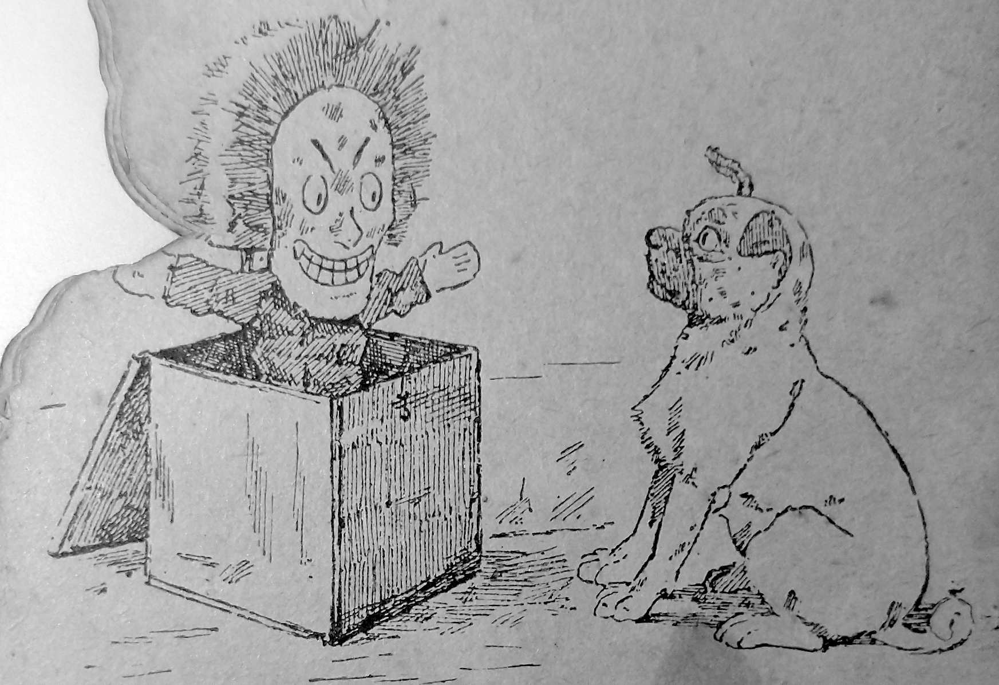

Ons Griffioenhondje
Ernest d'Hervilly
Ons griffioentje
Ons griffioentje is geweldig.
Onze kat is dat ook, maar die is nog iets anders.
Hij is een charmante kapper
met een zeldzame vaardigheid.
Echt waar!
Hij trekt niet meer dan veertig haren
uit de mensen die hij kamt:
dat is niet veel!
Ons griffioentje heeft snorren
als een oude soldaat.
Nou, onze kat maakt ze op met zijn tong,
waarna ze punten hebben als bliksemafleiders!
Dus alle voorbijgangers zeggen,
als ze ons griffioentje zien:
- "Deze hond is prachtig gekleed,
het is echt een hond van de wereld!"
Het griffioentjesportret
Ons griffioentje is geschilderd
door een groot kunstenaar -
een lid van het Instituut.
U ziet dit portret op de Salon,
dit jaar. De kunstenaar gebruikte
olieverf - of was het nou boterverf?
ik weet het niet meer -
om dit opmerkelijke werk te maken.
De Blinde Azor
"Heb medelijden met een arme blinde?"
- "Zeker, mijn oude Azor;
hier is twee cent voor jou, "
zei de rijke Caesar terloops.
Maar, oude Azor, voegde Caesar eraan toe,
zou je niet een man moeten inhuren
om je te laten rijden en om
je kom in je mond te stoppen?
Russische bergen
De afdaling is duizelingwekkend!
Maar het is ook erg leuk.
De wind krult onze oren,
want we gaan in een razend tempo!
Houd vol, kameraden!
Naar voren! naar voren!
Ja, maar arme Tom blijft achter!
Op de tennisbaan, een interessante zet
Het was een beroemd spel;
het duurde vier uur en een kwartier,
De tegenstanders droegen grote namen:
Een daarvan was Baron van der Goot,
de andere was de Flitsende Graaf.
Ze maakten vier overhemden vuil.
De hele club woonde de wedstrijd bij.
De emoties liepen hoog op.
De spelers gooiden de ballen naar elkaar
en braken hun tanden!
De toeschouwers juichten de klappen toe.
De Flitsende Graaf was de overwinnaar.
Naïef eerbetoon
Op een dag zagen drie kleine hondjes,
drie onschuldige kleintjes,
ons griffioentje in zijn mooie snorren blazen.
Ze kwamen nederig voor hem staan,
en zeiden bewonderend: ... Waf! Waf! Waf!
Onze griffioen zei tegen hen,
vervuld van mildheid
voor deze arme kleintjes;
"Kijk maar naar naar mij, mijn buurtjes!"
"Het is niet verboden en
het mag van mij."
"Wil je misschien weten
hoe ik aan zulke geweldige snorren kom?"
"Nou, ik vet ze in met een mengsel
van tijger- en leeuwenbloed!
Dat is het hele geheim,
mijn kleine vrienden..."
De bevende hondjes begonnen
te huilen en zeiden: Waf! Waf! Waf!
Ik ben niet bang

Grrr... ik ben niet bang voor je!
Grrr... je bent heel ondeugend!
Als ik niet zo'n goed opgeleide hond was
dan zou ik je in je neus bijten!
Grrr... je durft me geen antwoord te geven,
en dat is heel verstandig,
omdat ik mijn geduld wel eens kan verliezen!
boekgegevens
Parijs:
Nieuwe jeugdboekhandel
L. Westhausser, redacteur,
10 Rue de l'Abbaye 10.
Alle rechten voorbehouden